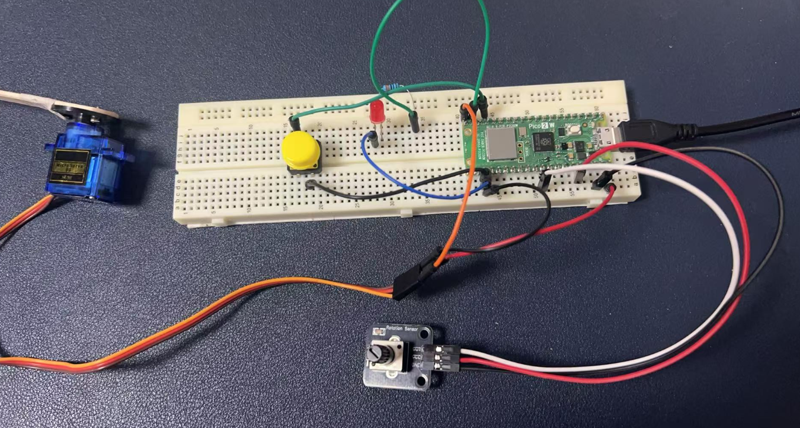
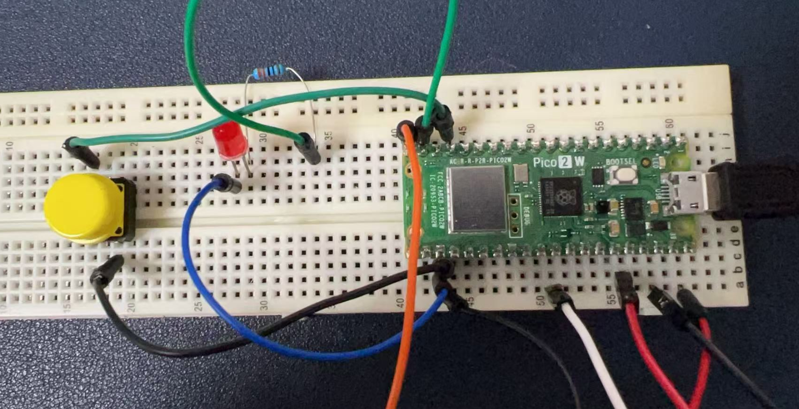
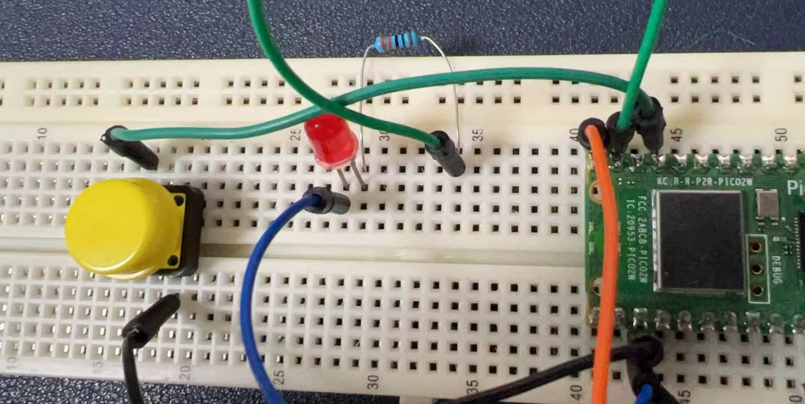

Project 5: Fun with Servo and Friends
Servo Introduction
A servo motor is a powerful little component that can rotate to specific angles. It's like a tiny robot arm that can point in different directions based on what you tell it. Servos are perfect for making things move in a controlled way, and they're super easy to use with a microcontroller like the Pico 2W.
Hardware Requirements
To bring this project to life, you'll need the following components:
- 1 x Raspberry Pi Pico 2W - The brain of our project.
- 1 x Servo Motor - The star of the show.
- 1 x LED - For some flashy fun.
- 1 x Button - To give you control.
- 1 x Potentiometer - To adjust things on the fly.
- 1 x Resistor (220Ω) - To protect the LED.
- 6 x Jumper Wires - To connect everything.
- 1 x Breadboard - To keep everything organized.
Wiring Diagram
Let's connect everything up:

Servo Motor:
- Connect the red wire to the 5V pin on the Pico 2W.
- Connect the black wire to a GND pin.
- Connect the yellow (signal) wire to GPIO pin 15 on the Pico 2W.
LED:
- Connect the longer leg (anode) to GPIO pin 14.
- Connect the shorter leg (cathode) to a 220Ω resistor.
- Connect the other end of the resistor to GND.
Button:
- Connect one leg to GPIO pin 13.
- Connect the other leg to GND.
Potentiometer:
- Connect the middle pin to GPIO pin 26 (analog input).
- Connect the left pin to 3.3V.
- Connect the right pin to GND.


Demo Code
Here's a fun piece of code to make everything work together:
import machine
import utime
# Initialize the servo
servo = machine.PWM(machine.Pin(15))
servo.freq(50) # Set PWM frequency to 50Hz
# Initialize the LED
led = machine.Pin(14, machine.Pin.OUT)
# Initialize the button
button = machine.Pin(13, machine.Pin.IN, machine.Pin.PULL_UP)
# Initialize the potentiometer
pot = machine.ADC(machine.Pin(26))
while True:
# Read the potentiometer value
pot_value = pot.read_u16()
angle = int(pot_value / 65535 * 180) # Convert to angle (0-180 degrees)
# Set the servo position
duty_cycle = int(angle / 180 * 1000000 + 500000) # Convert angle to duty cycle
servo.duty_ns(duty_cycle)
# Check if the button is pressed
if button.value() == 0: # Button is pressed (active low)
led.value(1) # Turn on the LED
else:
led.value(0) # Turn off the LED
utime.sleep(0.1)
Code Explanations
- Servo Control:
- We use the
machine.PWMclass to control the servo. Thefreq(50)sets the PWM frequency to 50Hz, which is standard for servos. -
The angle is converted to a duty cycle using the formula:
duty_cycle = angle / 180 * 1000000 + 500000. This maps the angle to the correct PWM signal. -
LED Control:
-
The LED is turned on or off based on the button press. When the button is pressed (
button.value() == 0), the LED lights up. -
Potentiometer Input:
- The potentiometer value is read using the
ADCclass. The value is scaled to an angle between 0 and 180 degrees, which controls the servo position.
Conclusion
This project combines movement, interaction, and visual feedback to create a fun and engaging experience. Enjoy experimenting with different angles and seeing how the servo responds!